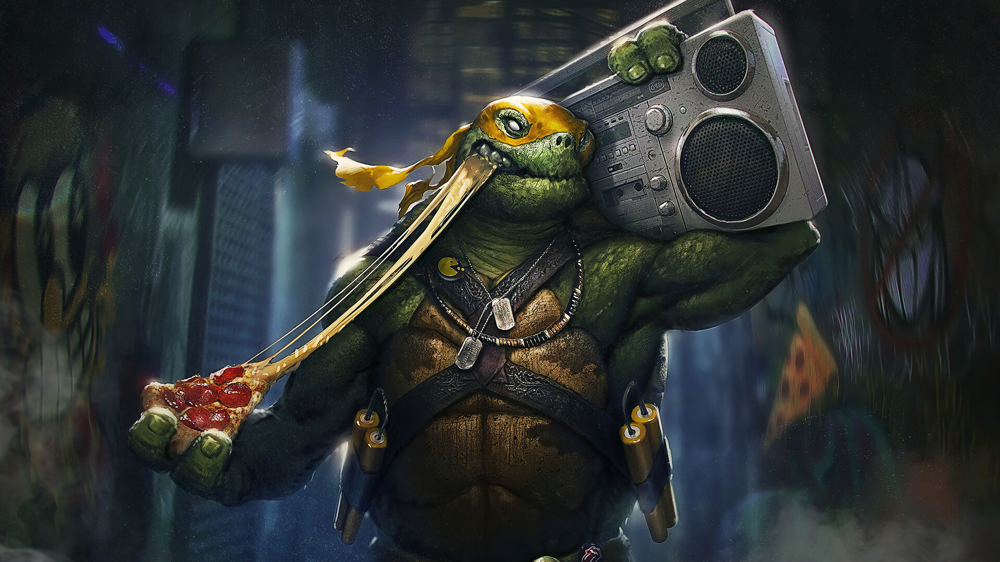

Michelangelo, nicknamed Mike or Mikey, is a fictional superhero and one of the four main characters of the Teenage Mutant Ninja Turtles comics and all related media. He is usually depicted wearing an orange eye mask. His signature weapons are dual nunchaku, though he has also been portrayed using other weapons, such as a grappling hook, manriki-gusari, tonfa, and a three-section staff (in some action figures). Michaelangelo is the most naturally skilled of his four brothers, but prefers to have a good time rather than train. The youngest of the group he is shown to be rather immature, he is known for his wise-cracks, love of skateboarding, witty optimism and like his brothers love of pizza.